전기산업기사 (2020-08-22 기출문제)
1과목: 전기자기학
1. 표의 ㉠, ㉡과 같은 단위로 옳게 나열한 것은?
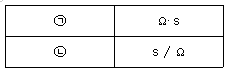
- ㉠: H, ㉡: F
- ㉠: H/m, ㉡: F/m
- ㉠: F, ㉡: H
- ㉠: F/m, ㉡: H/m
(정답률: 66%)

2. 진공 중에 판간 거리가 d(m)인 무한 평판 도체 간의 전위차(V)는? (단, 각 평판 도체에는 면전하밀도 +σ(C/m2), -σ(C/m2)가 각각 분포되어 있다.)
- σd
- σ/ε0
- ε0σ/d
- σd/ε0
(정답률: 46%)
3. 어떤 자성체 내에서의 자계의 세기가 800AT/m이고 자속밀도가 0.⑤Wb/m2일 때 이 자성체의 투자율은 몇 H/m인가?
- 3.25×10-5
- 4.25×10-5
- 5.25×10-5
- 6.25×10-5
(정답률: 63%)
4. 자기 인덕턴스의 성질을 설명으로 옳은 것은?
- 경우에 따라 정(+) 또는 부(-)의 값을 갖는다.
- 항상 정(+)의 값을 갖는다.
- 항상 부(-)의 값을 갖는다.
- 항상 0이다.
(정답률: 63%)
5. 자기회로에 대한 설명으로 틀린 것은? (단, S는 자기회로의 단면적이다.)
- 자기저항의 단위는 H(Henry)의 역수이다.
- 자기저항의 역수를 퍼미언스(permeance)라고 한다.
- "자기저항= (자기회로의 단면을 통과하는 자속)/(자기회로의 총 기자력)"이다.
- 자속밀도 B가 모든 단면에 걸쳐 균일하다면 자기회로의 자속은 BS 이다.
(정답률: 58%)
6. 비유전율이 2.8인 유전체에서의 전속밀도가 D=3.0×10-7C/m2일 때 분극의 세기 P는 약 몇 C/m2인가?
- 1.93×10-7
- 2.93×10-7
- 3.50×10-7
- 4.07×10-7
(정답률: 53%)
7. 전계의 세기가 5×102(V/m)인 전계 중 8×10-8(C)의 전하가 놓일 때 전하가 받는 힘은 몇 N인가?
- 4×10-2
- 4×10-3
- 4×10-4
- 4×10-5
(정답률: 62%)
8. 지름 2mm의 동선에 π(A)의 전류가 균일하게 흐를 때 전류밀도는 몇 A/m2인가?
- 103
- 104
- 105
- 106
(정답률: 45%)
9. 반지름이 a(m)인 도체구에 전하 Q(C)을 주었을 때, 구 중심에서 r(m) 떨어진 구 외부(r＞a)의 한 점에서의 전속밀도 D(C/m2)는?
- Q/4πa2
- Q/4πr2
- Q/4πεa2
- Q/4πεr2
(정답률: 48%)
10. 2Wb/m2인 평등 자계 속에 길이가 30cm인 도선이 자계와 직각 방향으로 놓여있다. 이 도선이 자계와 30°의 방향으로 30m/s의 속도로 이동할 때, 도체 양단에 유기되는 기전력(V)의 크기는?
- 3
- 9
- 30
- 90
(정답률: 61%)
11. 공기 중에 있는 무한 직선 도체에 전류 I(A)가 흐르고 있을 때 도체에서 r(m) 떨어진 점에서의 자속 밀도(Wb/m2)는?
- I/2πr
- 2μ0I
- μ0I/r
- μ0I/2πr
(정답률: 49%)
12. 무한 평면 도체로부터 d(m)인 곳에 점전하 Q(C)가 있을 때 도체 표면상에 최대로 유도되는 전하밀도(C/m2)는?
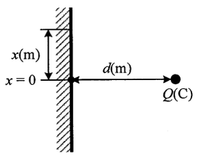
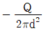
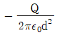
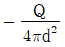
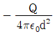
(정답률: 38%)
13. 선간전압이 66000V인 2개의 평행 왕복 도선에 10kA의 전류가 흐르고 있을 때 도선 1m 마다 작용하는 힘의 크기는 몇 N/m인가? (단, 도선 간의 간격은 1m이다.)
- 1
- 10
- 20
- 200
(정답률: 52%)
14. 무손실 유전체에서 평면 전자파의 전계 E와 자계 H사이 관계식으로 옳은 것은?
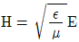
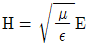
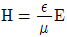
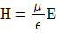
(정답률: 53%)
15. 대전 도체 표면의 전하밀도는 도체 표면의 모양에 따라 어떻게 되는가?
- 곡률이 작으면 작아진다.
- 곡률 반지름이 크면 커진다.
- 평면일 때 가장 크다.
- 곡률 반지름이 작으면 작다.
(정답률: 51%)
16. 1Ah의 전기량은 몇 C인가?
- 1/3600
- 1
- 60
- 3600
(정답률: 67%)
17. 강자성체가 아닌 것은?
- 철
- 구리
- 니켈
- 코발트
(정답률: 67%)
18. 맥스웰(Maxwell) 전자방정식의 물리적 의미중 틀린 것은?
- 자계의 시간적 변화에 따라 전계의 회전이 발생한다.
- 전도전류와 변위전류는 자계를 발생시킨다.
- 고립된 자극이 존재한다.
- 전하에서 전속선이 발산한다.
(정답률: 63%)
19. 2㎌, 3㎌, 4㎌의 커패시터를 직렬로 연결하고 양단에 가한 전압을 서서히 상승시킬 때의 현상으로 옳은 것은? (단, 유전체의 재질 및 두께는 같다고 한다.)
- 2㎌의 커패시터가 제일 먼저 파괴된다.
- 3㎌의 커패시터가 제일 먼저 파괴된다.
- 4㎌의 커패시터가 제일 먼저 파괴된다.
- 3개의 커패시터가 동시에 파괴된다.
(정답률: 70%)
20. 패러데이관의 밀도와 전속밀도는 어떠한 관계인가?
- 동일하다.
- 패러데이관의 밀도가 항상 높다.
- 전속밀도가 항상 높다.
- 항상 틀리다.
(정답률: 62%)
2과목: 전력공학
21. 수전용 변전설비의 1차측에 설치하는 차단기의 용량은 어느 것에 의하여 정하는가?
- 수전전력과 부하율
- 수전계약용량
- 공급측 전원의 단락용량
- 부하설비용량
(정답률: 59%)
22. 어떤 발전소의 유효 낙차가 100m이고, 사용 수량이 10m3/s일 경우 이 발전소의 이론적인 출력(kW)은?
- 4900
- 9800
- 10000
- 14700
(정답률: 62%)
23. 피뢰기의 제한전압이란?
- 상용주파전압에 대한 피뢰기의 충격방전 개시 전압
- 충격파 침입 시 피뢰기의 충격방전 개시전압
- 피뢰기가 충격파 방전 종료 후 언제나 속류를 확실히 차단할 수 있는 상용주파 최대전압
- 충격파 전류가 흐르고 있을 때의 피뢰기 단자전압
(정답률: 50%)
24. 발전기의 정태 안정 극한전력이란?
- 부하가 서서히 증가할 때의 극한전력
- 부하가 갑자기 크게 변동할 때의 극한전력
- 부하가 갑자기 사고가 났을 때의 극한전력
- 부하가 변하지 않을 때의 극한전력
(정답률: 59%)
25. 3상으로 표준전압 3kV, 용량 600kW, 역률 0.85로 수전하는 공장의 수전회로에 시설할 계기용 변류기의 변류비로 적당한 것은? (단, 변류기의 2차 전류는 5A이며, 여유율은 1.5배로 한다.)
- 10
- 20
- 30
- 40
(정답률: 33%)
26. 30000kW의 전력을 50km 떨어진 지점에 송전하려고 할 때 송전전압(kV)은 약 얼마인가? (단, still식에 의하여 산정한다.)
- 22
- 33
- 66
- 100
(정답률: 40%)
27. 다음 중 전력선에 의한 통신선의 전자유도장해의 주된 원인?
- 전력선과 통신선 사이의 상호 정전용량
- 전력선의 불충분한 연가
- 전력선의 1선 지락 사고 등에 의한 영상전류
- 통신선 전압보다 높은 전력선의 전압
(정답률: 55%)
28. 조상설비가 있는 발전소 측 변전소에서 주변압기로 주로 사용되는 변압기는?
- 강압용 변압기
- 단권 변압기
- 3권선 변압기
- 단상 변압기
(정답률: 52%)
29. 3상 1회선의 송전선로에 3상 전압을 가해 충전할 때 선에 흐르는 충전전류는 30A, 또 3선을 일괄하여 이것과 대지사이에 상전압을 가하여 충전시켰을 때 전 충전전류는 60A가 되었다. 이 선로의 대지정전용량과 선간정전용량의 비는? (단, 대지정전용량= Cs, 선간정전용량= Cm이다.)
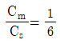
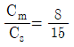
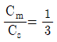
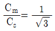
(정답률: 42%)
30. 전력 사용의 변동 상태를 알아보기 위한 것으로 가장 적당한 것은?
- 수용률
- 부등률
- 부하율
- 역률
(정답률: 45%)
31. 단상 교류회로에 3150/210V의 승압기를 80kW, 역률 0.8인 부하에 접속하여 전압을 상승시키는 경우 약 몇 kVA의 승압기를 사용하여야 적당하가? (단, 전원전압은 2900V이다.)
- 3.6
- 5.5
- 6.8
- 10
(정답률: 37%)
32. 철탑의 접지저항이 커지면 가장 크게 우려되는 문제점은?
- 정전 유도
- 역섬락 발생
- 코로나 증가
- 차폐각 증가
(정답률: 64%)
33. 역률 0.8(지상), 480kW 부하가 있다. 전력용 콘덴서를 설치하여 역률을 개선하고자 할 때 콘덴서 220kVA를 설치하면 역률은 몇 %로 개선되는가?
- 82
- 85
- 90
- 96
(정답률: 51%)
34. 화력발전소에서 탈기기를 사용하는 주 목적은?
- 급수 중에 함유된 산소 등의 분리 제거
- 보일러 관벽의 스케일 부착 방지
- 급수중에 포함된 염류의 제거
- 연소용 공기의 예열
(정답률: 59%)
35. 변류기를 개방할 때 2차측을 단락하는 이유는?
- 1차측 과전류 보호
- 1차측 과전압 방지
- 2차측 과전류 보호
- 2차측 절연 보호
(정답률: 57%)
36. ( ) 안에 들어갈 내용으로 옳은 것은?
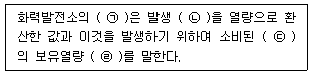
- ㉠: 손실율, ㉡: 발열량, ㉢: 물, ㉣: 차
- ㉠: 열효율, ㉡: 전력량, ㉢: 연료, ㉣: 비
- ㉠: 발전량, ㉡: 증기량, ㉢: 연료, ㉣: 결과
- ㉠: 연료소비율, ㉡: 증기량, ㉢: 물, ㉣: 차
(정답률: 60%)
37. 다음 중 전압강하의 정도를 나타내는 식으로 옳지 않은 것은? (단, ES는 송전단전압, ER은 수전단전압이다.)
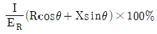
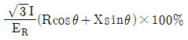
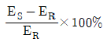
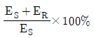
(정답률: 54%)
38. 수전단 전압이 송전단 전압보다 높아지는 현상과 관련된 것은?
- 페란티 효과
- 표피 효과
- 근접 효과
- 도플러 효과
(정답률: 65%)
39. 송전선로의 중성점을 접지하는 목적으로 가장 알맞은 것은?
- 전선량의 절약
- 송전용량의 증가
- 전압강하의 감소
- 이상 전압의 경감 및 발생 방지
(정답률: 64%)
40. 송전선로에서 4단자정수 A, B, C, D사이의 관계은?
- BC-AD=1
- AC-BD=1
- AB-CD=1
- AD-BC=1
(정답률: 62%)
3과목: 전기기기
41. 돌극형 동기발전기에서 직축 리액턴스 Xd와 횡축 리액턴스 Xq는 그 크기 사이에 어떤 관계가 있는가?
- Xd = Xq
- Xd > Xq
- Xd < Xq
- 2Xd = Xq
(정답률: 52%)
42. 어떤 정류기의 출력전압 평균값이 2000V이고, 맥동률이 3%이면 교류분은 몇 V 포함되어 있는가?
- 20
- 30
- 60
- 70
(정답률: 58%)
43. 직류기에서 전류용량이 크고 저전압 대전류에 가장 적합한 브러시 재료는?
- 탄소질
- 금속 탄소질
- 금속 흑연질
- 전기 흑연질
(정답률: 54%)
44. 동기발전기 종류 중 회전계자형의 특징으로 옳은 것은?
- 고주파 발전기에 사용
- 극소용량, 특수용으로 사용
- 소요전력이 크고 기구적으로 복잡
- 기계적으로 튼튼하여 가장 많이 사용
(정답률: 59%)
45. 전압비 a인 단상변압기 3대를 1차 △결선, 2차 Y결선으로 하고 1차에 선간전압 V(V)를 가했을 때 무부하 2차 선간전압(V)은?
- V/a
- a/V
- √3∙V/a
- √3∙a/v
(정답률: 52%)
46. 단상 및 3상 유도전압조정기에 대한 설명으로 옳은 것은?
- 3상 유도전압조정기에는 단락권선이 필요 없다.
- 3상 유도전압조정기의 1차, 2차 전압은 동상이다.
- 단락권선은 단상 및 3상 유도전압조정기 모두 필요하다.
- 단상 유도전압조정기의 기전력은 회전자계에 의해 유도된다.
(정답률: 39%)
47. 12극과 8극인 2개의 유도전동기를 종속법에 의한 직렬접속법으로 속도제어할 때 전원주파수가 60Hz인 경우 무부하 속도 No는 몇 rps인가?
- 5
- 6
- 200
- 360
(정답률: 41%)
48. 인버터에 대한 설명으로 옳은 것은?
- 직류를 교류로 변환
- 교류를 교류로 변환
- 직류를 직류로 변환
- 교류를 직류로 변환
(정답률: 65%)
49. 직류전동기의 역기전력에 대한 설명으로 틀린 것은?
- 역기전력은 속도에 비례한다.
- 역기전력은 회전방향에 따라 크기가 다르다.
- 역기전력이 증가할수록 전기자 전류는 감소한다.
- 부하가 걸려 있을 때에는 역기전력은 공급전압보다 크기가 작다.
(정답률: 44%)
50. 유도전동기의 실부하법에서 부하로 쓰이지 않는 것은?
- 전동발전기
- 전기동력계
- 프로니 브레이크
- 손실을 알고 있는 직류발전기
(정답률: 37%)
51. 직류기의 구조가 아닌 것은?
- 계자 권선
- 전기자 권선
- 내철형 철심
- 전기자 철심
(정답률: 61%)
52. 30kW의 3상 유도전동기에 전력을 공급할 때 2대의 단상변압기를 사용하는 경우 변압기의 용량은 약 몇 kVA인가? (단, 전동기의 역률과 효율은 각각 84%, 86%이고 전동기 손실은 무시한다.)
- 17
- 24
- 51
- 72
(정답률: 37%)
53. 3상, 6극, 슬롯 수 54의 동기발전기가 있다. 어떤 전기자 코일의 두 변이 제1슬롯과 제8슬롯에 들어있다면 단절권 계수는 약 얼마인가?
- 0.9397
- 0.9567
- 0.9837
- 0.9117
(정답률: 41%)
54. 부흐홀츠 계전기로 보호되는 기기는?
- 변압기
- 발전기
- 유도전동기
- 회전변류기
(정답률: 57%)
55. 변압기의 효율이 가장 좋을 때의 조건은?
- 철손 = 동손
- 철손 = 1/2동손
- 1/2철손 = 동손
- 철손 = 2/3동손
(정답률: 62%)
56. 직류전동기 중 부하가 변하면 속도가 심하게 변하는 전동기는?
- 분권 전동기
- 직권 전동기
- 자동 복권 전동기
- 가동 복권 전동기
(정답률: 53%)
57. 1차 전압 6900V, 1차 권선 3000회, 권수비 20의 변압기가 60Hz에 사용할 때 철심의 최대 자속(Wb)은?
- 0.76×10-4
- 8.63×10-3
- 80×10-3
- 90×10-3
(정답률: 53%)
58. 표면을 절연 피막처리 한 규소강판을 성층하는 이유로 옳은 것은?
- 절연성을 높이기 위해
- 히스테리시스손을 작게 하기 위해
- 자속을 보다 잘 통하게 하기 위해
- 와전류에 의한 손실을 작게 하기 위해
(정답률: 43%)
59. 단상 유도전동기 중 기동토크가 가장 작은 것은?
- 반발 기동형
- 분상 기동형
- 쉐이딩 코일형
- 커패시티 기동형
(정답률: 55%)
60. 동기기의 전기자 권선법으로 적합하지 않은 것은?
- 중권
- 2층권
- 분포권
- 환상권
(정답률: 51%)
4과목: 회로이론
61.
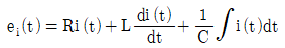
에서 모든 초기 값을 0으로 하고 라플라스 변환했을 때 I(s)는? (단, I(s), Ei(s)는 i(t), ei(t)를 라플라스 변환한 것이다.)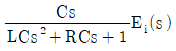
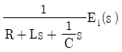
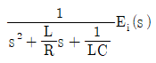
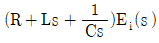
(정답률: 48%)
62. 기본파의 30%인 제3고조파와 기본파의 20%인 제5고조파를 포함하는 전압의 왜형률은 약 얼마인가?
- 0.21
- 0.31
- 0.36
- 0.42
(정답률: 52%)
63. 3상 회로의 대칭분 전압이 V0=-8+j3(V), V1=6-j8(V), V2=8+j12(V)일 때 a상의 전압(V)은? (단, V0는 영상분, V1은 정상분, V2는 역상분 전압이다.)
- 5-j6
- 5+j6
- 6-j7
- 6+j7
(정답률: 48%)
64. 어느 회로에 V=120+j90(V)의 전압을 인가하면 I=3+j4(A)의 전류가 흐른다. 이 회로의 역률은?
- 0.92
- 0.94
- 0.96
- 0.98
(정답률: 47%)
65. 2단자 회로망에 단상 100V의 전압을 가하면 30A의 전류가 흐르고 1.8kW의 전력이 소비된다. 이 회로망과 병렬로 커패시터를 접속하여 합성 역률을 100%로 하기 위한 용량성 리액턴스는 약 몇 Ω인가?
- 2.1
- 4.2
- 6.3
- 8.4
(정답률: 37%)
66. 22kVA의 부하가 0.8의 역률로 운전될 때 이 부하의 무효전력(kvar)은?
- 11.5
- 12.3
- 13.2
- 14.5
(정답률: 48%)
67. 어드미턴스 Y(℧)로 표현된 4단자 회로망에서 4단자 정수 행렬 T는? (단,
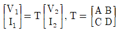
)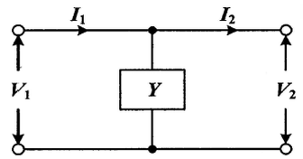
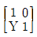
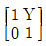
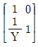
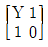
(정답률: 47%)
68. 회로에서 10Ω의 저항에 흐르는 전류(A)는?
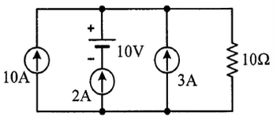
- 8
- 10
- 15
- 20
(정답률: 58%)
69. 10Ω의 저항 5개를 접속하여 얻을 수 있는 합성저항 중 가장 적은 값은 몇 Ω인가?
- 10
- 5
- 2
- 0.5
(정답률: 57%)
70. 동일한 용량 2대의 단상 변압기를 V결선하여 3상으로 운전하고 있다. 단상 변압기 2대의 용량에 대한 3상 V 결선시 변압기 용량의 비인 변압기 이용률은 약 몇 % 인가?
- 57.7
- 70.7
- 80.1
- 86.6
(정답률: 53%)
71. 4단자 회로망에서의 영상 임피던스(Ω)는?
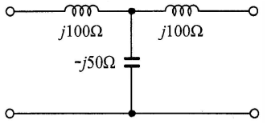
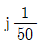
- - 1
- 1
- 0
(정답률: 46%)
72. i(t)=3√2sin(377t-30°) (A)의 평균값은 약 몇 A인가?
- 1.35
- 2.7
- 4.35
- 5.4
(정답률: 40%)
73. 20Ω과 30Ω의 병렬회로에서 20Ω에 흐르는 전류가 6A이라면 전체 전류 I(A)는?
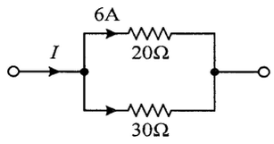
- 3
- 4
- 9
- 10
(정답률: 45%)
74.
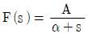
의 라플라스 역변환은?- αeAt
- Aeαt
- αe-At
- Ae-αt
(정답률: 53%)
75. RC 직렬회로의 과도현상에 대한 설명으로 옳은 것은?
- 과도상태 전류의 크기는 (R×C)의 값과는 무관하다.
- (R×C)의 값이 클수록 과도상태 전류의 크기는 빨리 사라진다.
- (R×C)의 값이 클수록 과도상태 전류의 크기는 천천히 사라진다.
- (1/R×C)의 값이 클수록 과도상태 전류의 크기는 천천히 사라진다.
(정답률: 52%)
76. 불평형 Y 결선의 부하 회로에 평형 3상 전압을 가할 경우 중성점의 전위 Vn′n(V)는? (단, Z1, Z2, Z3는 각 상의 임피던스(Ω)이고, Y1, Y2, Y3는 각 상의 임피던스에 대한 어드미턴스(℧)이다.)
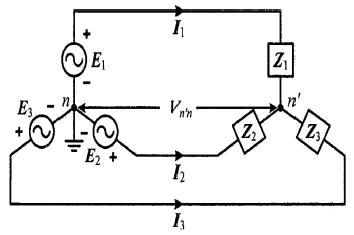
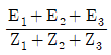
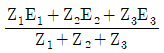
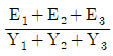
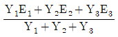
(정답률: 48%)
77. RL 병렬회로에서 t=0일 때 스위치 S를 닫는 경우 R(Ω)에 흐르는 전류 iR(t)(A)는?
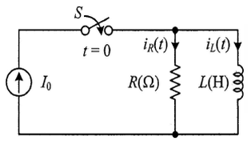
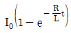
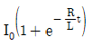
- I0
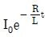
(정답률: 38%)
78. 1상의 임피던스가 14+j48(Ω)인 평형 △부하에 선간전압이 200V인 평형 3상 전압이 인가될 때 이 부하의 피상전력(VA)는?
- 1200
- 1384
- 2400
- 4157
(정답률: 41%)
79.
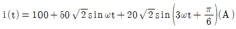
로 표현되는 비정현파 전류의 실효값은 약 몇 A인가?- 20
- 50
- 114
- 150
(정답률: 52%)
80. 저항만으로 구성된 그림의 회로에 평형 3상 전압을 가했을 때 각 선에 흐르는 선전류가 모두 같게 되기 위한 R(Ω)의 값은?
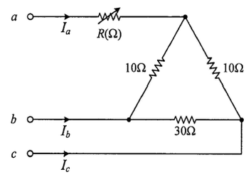
- 2
- 4
- 6
- 8
(정답률: 40%)
5과목: 전기설비기술기준 및 판단 기준
81. 22900V용 변압기의 금속제 외함에는 몇 종 접지공사를 하여야 하는가?(관련 규정 개정전 문제로 여기서는 기존 정답인 1번을 누르면 정답 처리됩니다. 자세한 내용은 해설을 참고하세요.)
- 제1종 접지공사
- 제2종 접지공사
- 제3종 접지공사
- 특별 제3종 접지공사
(정답률: 54%)
82. 154kV 가공전선과 식물과의 최소 이격거리는 몇 m 인가?
- 2.8
- 3.2
- 3.8
- 4.2
(정답률: 45%)
83. 다음( )의 ㉠, ㉡에 들어갈 내용으로 옳은 것은?
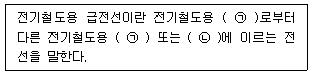
- ㉠: 급전소, ㉡: 개폐소
- ㉠: 궤전선, ㉡: 변전소
- ㉠: 변전소, ㉡: 전차선
- ㉠: 전차선, ㉡: 급전소
(정답률: 46%)
84. 제1종 특고압 보안공사로 시설하는 전선로의 지지물로 사용할 수 없는 것은?
- 목주
- 철탑
- B종 철주
- B종 철근 콘크리트주
(정답률: 56%)
85. 저압 가공인입선 시설 시 도로를 횡단하여 시설하는 경우 노면상 높이는 몇 m 이상으로 하여야 하는가?
- 4
- 4.5
- 5
- 5.5
(정답률: 49%)
86. 기구 등의 전로의 절연내력 시험에서 최대 사용전압이 60kV를 초과하는 기구 등의 전로로서 중성점 비접지식전로에 접속하는 것은 최대 사용전압의 몇 배의 전압에 10분간 견디어야 하는가?
- 0.72
- 0.92
- 1.25
- 1.5
(정답률: 42%)
87. 저압 가공전선(다중접지된 중성선은 제외)과 고압 가공전선을 동일 지지물에 시설하는 경우 저압 가공전선과 고압 가공전선 사이의 이격거리는 몇 cm 이상이어야 하는가? (단, 각도주(角度柱), 분기주(分破柱) 등에서 혼촉(混觸)의 우려가 없도록 시설하는 경우가 아니다.)
- 50
- 60
- 80
- 100
(정답률: 34%)
88. 폭연성 분진이 많은 장소의 저압 옥내배선에 적합한 배선공사방법은?
- 금속관 공사
- 애자사용 공사
- 합성수지관 공사
- 가요전선관 공사
(정답률: 56%)
89. 절연내력시험은 전로와 대지 사이에 연속하여 10분간 가하여 절연내력을 시험하였을 때에 이에 견디어야 한다. 최대 사용전압이 22.9kV인 중성선 다중 접지식 가공전선로의 전로와 대지 사이의 절연내력 시험전압은 몇 V인가?
- 16488
- 21068
- 22900
- 28625
(정답률: 44%)
90. 특고압 가공전선로의 지지물에 시설하는 통신선 또는 이에 직접 접속하는 통신선이 도로·횡단보도교·철도의 레일 등 또는 교류 전차선 등과 교차하는 경우의 시설기준으로 옳은 것은?
- 인장강도 4.0kN 이상의 것 또는 지름 3.5mm 경동선일 것
- 통신선이 케이블 또는 광섬유 케이블일 때에는 이격거리의 제한이 없다.
- 통신선과 삭도 또는 다른 가공약전류 전선 등 사이의 이격거리는 20cm 이상으로 할 것
- 통신선이 도로·횡단보도교·철도의 레일과 교차하는 경우에는 통신선은 지름 4mm의 절연전선과 동등 이상의 절연 효력이 있을 것
(정답률: 38%)
91. 시가지 또는 그 밖에 인가가 밀집한 지역에 154kV 가공전선로의 전선을 케이블로 시설하고자 한다. 이 때 가공전선을 지지하는 애자장치의 50% 충격섬락전압 값이 그 전선의 근접한 다른부분을 지지하는 애자장치 값의 몇 % 이상이어야 하는가?
- 75
- 100
- 1⑤
- 110
(정답률: 41%)
92. 변압기에 의하여 154kV에 결합되는 3300V 전로에는 몇 배 이하의 사용전압이 가하여진 경우에 방전하는 장치를 그 변압기의 단자에 가까운 1극에 시설하여야 하는가?
- 2
- 3
- 4
- 5
(정답률: 47%)
93. 고압 가공전선으로 ACSR(강섬알루미늄연선)을 사용할 때의 안전율은 얼마 이상이 되는 이도(弛度)로 시설하여야 하는가?
- 1.38
- 2.1
- 2.5
- 4.01
(정답률: 51%)
94. 발전기를 구동하는 풍차의 압유장치의 유압, 압축공기장치의 공기압 또는 전동식 브레이드 제어장치의 전원전압이 현저히 저하한 경우 발전기를 자동적으로 전로로부터 차단하는 장치를 시설하여야 하는 발전기 용량은 몇 kVA 이상인가?
- 100
- 300
- 500
- 1000
(정답률: 29%)
95. 욕조나 샤워시설이 있는 욕실 또는 화장실 등 인체가 물에 젖어 있는 상태에서 전기를 사용하는 장소에 콘센트를 시설하는 경우에 적합한 누전차단기는?
- 정격감도전류 15mA 이하, 동작시간 0.03초 이하의 전류동작형 누전차단기
- 정격감도전류 15mA 이하, 동작시간 0.03초 이하의 전압동작형 누전차단기
- 정격감도전류 20mA 이하, 동작시간 0.3초 이하의 전류동작형 누전차단기
- 정격감도전류 20mA 이하, 동작시간 0.3초 이하의 전압동작형 누전차단기
(정답률: 51%)
96. 풀장용 수중조명등에 전기를 공급하기 위해 사용되는 절연변압기에 대한 설명으로 틀린 것은?
- 절연변압기 2차측 전로의 사용전압은 150V 이하이어야 한다.
- 절연변압기의 2차측 전로에는 반드시 제2종 접지 공사를 하며, 그 저항값은 5Ω 이하가 되도록 하여야 한다.
- 절연변압기 2차측 전로의 사용전압이 30V 이하인 경우에는 1차 권선과 2차 권선 사이에 금속제의 혼촉방지판이 있어야 한다.
- 절연변압기의 2차측 전로의 사용전압이 30V를 초과하는 경우에는 그 전로에 지락이 생겼을 때에 자동적으로 전로를 차단하는 장치가 있어야한다.
(정답률: 42%)
97. 건조한 곳에 시설하고 또한 내부를 건조한 상태로 사용하는 진열장 안의 사용전압이 400V 미만인 저압 옥내배선은 외부에서 보기 쉬운 곳에 한하여 코드 또는 캡타이어 케이블을 조영재에 접촉하여 시설할 수 있다. 이때 전선의 붙임점 간의 거리는 몇 m 이하로 시설하여야 하는가?
- 0.5
- 1.0
- 1.5
- 2.0
(정답률: 32%)
98. 가공전선로의 지지물에 사용하는 지선의 시설기준에 관한 내용으로 틀린 것은?
- 지선에 연선을 사용하는 경우 소선(素線) 3가닥 이상의 연선일 것
- 지선의 안전율은 2.5 이상, 허용 인장하중의 최저는 3.31kN으로 할 것
- 지선에 연선을 사용하는 경우 소선의 지름이 2.6mm 이상의 금속선을 사용한 것일 것
- 가공전선로의 지지물로 사용하는 철탑은 지선을 사용하여 그 강도를 분담시키지 않을 것
(정답률: 49%)
99. 뱅크용량 15000kVA 이상인 분로리액터에서 자동적으로 전로로부터 차단하는 장치가 동작하는 경우가 아닌 것은?
- 내부 고장 시
- 과전류 발생 시
- 과전압 발생 시
- 온도가 현저히 상승한 경우
(정답률: 51%)
100. 발열선을 도로, 주차장 또는 조영물의 조영재에 고정 시켜 시설하는 경우, 발열선에 전기를 공급하는 전로의 대지전압은 몇 V 이하이어야 하는가?
- 220
- 300
- 380
- 600
(정답률: 50%)